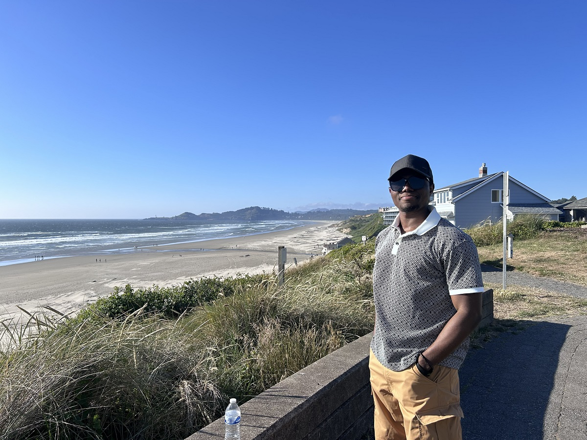
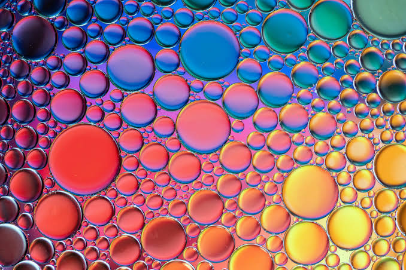
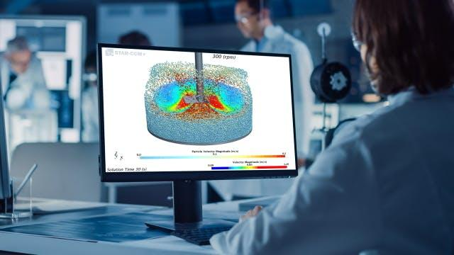
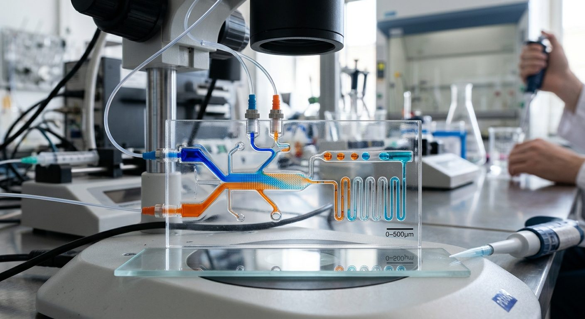
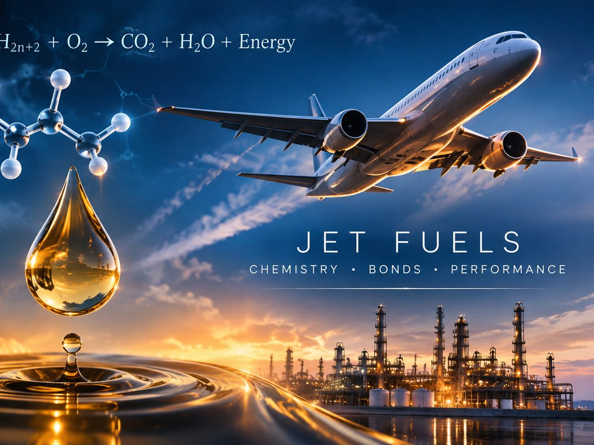

Hi, I’m Desmond Obaita.
I build process models from first principles, then take them off the screen and into hardware: 3D‑printed separators, microchannel reactors, and pilot plants. I like turning messy problems into clear answers
Ph.D. candidate at Oregon State University.


Who I Am
The best engineers aren’t always the most decorated. They’re the ones curious enough to ask the right questions and disciplined enough to do the work right. That’s the engineer I want to be, whether I’m picking up a new tool, learning a new method, or walking into an unfamiliar system.
I’ve spent most of my life chasing excellence in classrooms and research labs. Now I want to put that drive, optimism, and leadership experience to work on process intensification: making chemical processes smaller, cleaner, and more efficient so industries can grow without costing the planet as much.
Curiosity
I like knowing why things work, not just that they do. If there’s a new tool or method that could help, I’m happy to dig in and learn it.
Critical Thinking
I like to slow down and think a problem through before jumping in. When something breaks, I take it one piece at a time until I find what’s really going on.
Optimism
Things don’t always go as planned, and that’s okay. I try to stay positive, figure out the next step, and help people around me do the same.
What I bring
Model the process
Multiphysics models of reactors and separators: flow, heat transfer, species transport, and kinetics.
COMSOL Multiphysics, MATLAB/Simulink, Python, CFD
Build the device
Turning process requirements into equipment you can hold, using CAD and Additive Manufacturing.
Fusion, SolidWorks, Siemens NX, Material Extrusion (FFF), Powder Bed Fusion, Directed Energy Deposition (DED)
Bring it online
Instrumentation, experimentation, functional testing, and leak testing, plus hands‑on commissioning support alongside controls and research engineers at pilot scale.
PFD/P&ID, instrumentation, leak testing, troubleshooting
Selected Projects
Each one links to a short case study: the problem, what I did, and what came of it.

Separating Liquids With Geometry, Not Membranes
My dissertation asks whether carefully designed gradients in channel shape and surface wettability can pull two liquids apart on their own. I model it in COMSOL, print the devices, and test them on the bench, including a DOE‑funded lithium extraction project where a separator exceeded 95% separation efficiency.
Read the case study

Modeling a Pilot Fluidized‑Bed Reactor
As a process modeling engineer intern, I built a COMSOL model of a reacting fluidized‑bed reactor from scratch, coupling hydrodynamics, heat transfer, species transport, and custom shrinking‑core kinetics. Outside the model, I helped wire, test, and commission three pilot process units.
Read the case study

Two‑Phase Microflow Simulator
A browser‑based simulator I built so anyone can explore how droplets behave in a 2D microchannel. Change the inputs, watch the flow respond, and get a feel for the physics behind my research without installing anything.
Read the case study

Microchannel Reactors For Sustainable Aviation Fuel
Ethanol to butene is a key step in turning renewable alcohol into jet fuel. I was part of a team that modeled additively manufactured microchannel reactors for this conversion and linked COMSOL to MATLAB in an automated calibration loop. The work contributes to a 600× numbering‑up study now in review at Nature Energy.
Read the case study
Strengths & Expertise
Where I can help a team on day one.
Process Modeling & Optimization
Models built from first principles and checked against data.
COMSOL Multiphysics · CFD · Phase‑field modeling · MATLAB/Simulink · Python · Aspen HYSYS · Excel VBA
Testing & Instrumentation
Comfortable in the lab and on the plant floor.
PFD/P&ID · Instrumentation · Functional testing · Leak testing · Experimentation · Troubleshooting
Design & Fabrication
From CAD model to working prototype.
Fusion 360 · SolidWorks · Siemens NX · Material extrusion (FFF) · Powder bed fusion · DED
Technical Communication
Making complex work easy to understand and act on.
Technical reports · Sponsor presentations · Statistical analysis · JMP · Cross‑functional collaboration
Journey
-
B.Eng Chemical Engineering
Where my interest in process optimization started: my undergraduate research on extraction yield became my first published paper.
-
Graduate Research Assistant, Oregon State University
Joined Prof. Goran Jovanovic’s group working on microscale process intensification.
-
Graduate Intern, RAPID Process Intensification Program: AIChE
Selected for prestigious RAPID 2024 Summer Student Internship, DOE-sponsored internship in process intensification and sustainable manufacturing technologies.
-
Chemical Engineering Representative, Graduate Student Association
Represented graduate students in department discussions and carried their feedback to program leadership.
-
Process Modeling Engineer Intern, Duranium
Built a reacting fluidized‑bed model and helped commission pilot‑scale units.
-
M.Eng, Oregon State University
Added an M.Eng. alongside my Ph.D. to broaden my process engineering toolkit, with coursework in Machine Learning, Data Science for Chemical Engineers, Applied Numerical Methods (Using Python), Big Ideas in AI, Optimization in Design and Additive Manufacturing.
-
Ph.D. in Chemical Engineering, Oregon State University
Ph.D. candidate, wrapping up my dissertation on gradient‑driven microscale separation.
Direction & Goals
I want to help bring new technology from the lab to the plant, whether that’s through process design, modeling and simulation, R&D, or scale‑up. I’m especially drawn to sustainable fuels and critical minerals.
In the next few years I want to
- Own the process design of a unit, from PFD through startup.
- Use first‑principles models to cut the number of experiments a scale‑up needs.
- Grow into a lead engineer role, guiding a team, and work toward my PE license.
- Keep teaching and mentoring, so the next engineer has an easier start.
Let’s talk
I’m looking for full‑time roles in Process Engineering, Process Modeling, R&D and Scale‑Up starting in 2027. If you’re building something that has to work at scale, I’d love to hear about it.
Corvallis · Oregon